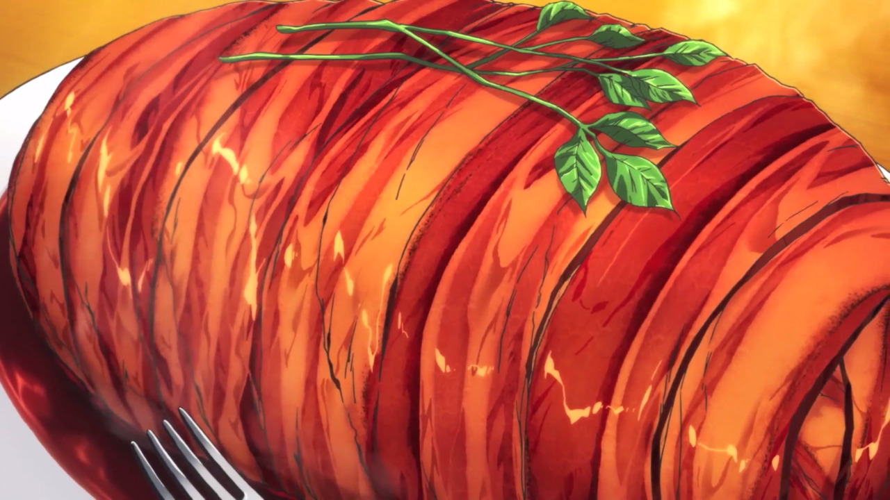

Gotcha Roasted Pork

Description
A mashed potato loaf that can pass for a delicious
pork roast from the anime show Shokugeki no Soma.
This mashed potato loaf is wrapped with mushroom, bacon and reduced with a red wine reduction
to make a juicy imitation of a pork roast.
Ingredients
- 5-6 medium yukon gold potatoes
- 1/2 a yellow onion, finely chopped
- 2 large king trumpet mushrooms, finely minced
- 2 gloved garlic, minced
- 4 Tbsp butter, cold + divided
- 1 Tbsp kosher salt
- 12-13 slices thick cut bacon, center-cut
- 4 sprigs rosemary, cut into 1-inch sections
- 150 ml red wine
- 75ml sweet sake
- 10ml soy sauce
- To garnish: watercress